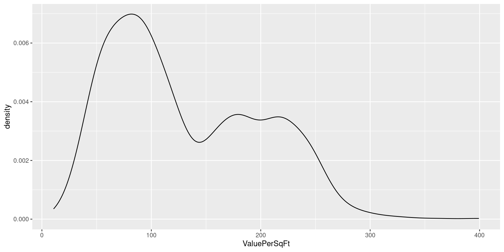

library(tidyverse)
library(boot)
library(coefplot)
library(mombf)
library(openintro)
library(pROC)Modern Statistical Computing
8. Model comparison
Pompeu Fabra University
Outcome distribution
Code
ggplot(housing, aes(x=ValuePerSqFt)) +
geom_density()
Code
ggplot(housing, aes(x=ValuePerSqFt)) +
geom_density(aes(color=Boro))
Transformations
Code
ggplot(housing, aes(x=SqFt, y=ValuePerSqFt)) + geom_point() + geom_smooth()Code
ggplot(housing, aes(x=Units, y=ValuePerSqFt)) + geom_point() + geom_smooth()
Code
ggplot(housing, aes(x=log10(SqFt), y=ValuePerSqFt)) + geom_point() + geom_smooth()
Code
ggplot(housing, aes(x=log10(Units), y=ValuePerSqFt)) + geom_point() + geom_smooth()
Fit 2 models: additive and with interactions
housing= transform(housing, lSqFt= log10(SqFt), lUnits= log10(Units))
fit1= lm(ValuePerSqFt ~ Boro + lSqFt + lUnits , data=housing)
fit2= lm(ValuePerSqFt ~ Boro + lSqFt + lUnits + Boro:lSqFt + Boro:lUnits, data=housing)coefSummary(fit1)# A tibble: 7 × 4
Parameter Estimate `Conf. Int.` `P-value`
<chr> <dbl> <chr> <chr>
1 (Intercept) -72.0 (-103.641,-40.392) 1e-05
2 BoroBrooklyn 36.4 (25.518,47.193) <0.00001
3 BoroManhattan 130. (119.805,140.918) <0.00001
4 BoroQueens 33.3 (22.236,44.458) <0.00001
5 BoroStaten Island -7.09 (-26.769,12.585) 0.47979
6 lSqFt 31.2 (22.056,40.244) <0.00001
7 lUnits -16.0 (-24.979,-7.116) 0.00043 coefplot(fit1)
coefSummary(fit2)# A tibble: 15 × 4
Parameter Estimate `Conf. Int.` `P-value`
<chr> <dbl> <chr> <chr>
1 (Intercept) 27.0 (-232.878,286.935) 0.83843
2 BoroBrooklyn 104. (-163.385,371.185) 0.44599
3 BoroManhattan -64.5 (-326.988,197.944) 0.62982
4 BoroQueens -15.9 (-297.751,265.944) 0.91191
5 BoroStaten Island 85.6 (-494.106,665.33) 0.77216
6 lSqFt 11.4 (-70.55,93.399) 0.78466
7 lUnits -20.1 (-100.036,59.832) 0.62197
8 BoroBrooklyn:lSqFt -28.7 (-112.854,55.48) 0.50398
9 BoroManhattan:lSqFt 43.1 (-39.595,125.75) 0.307
10 BoroQueens:lSqFt 19.2 (-70.599,109.082) 0.67454
11 BoroStaten Island:lSqFt -34.8 (-219.401,149.834) 0.71183
12 BoroBrooklyn:lUnits 39.1 (-43.077,121.211) 0.35112
13 BoroManhattan:lUnits -5.45 (-86.043,75.151) 0.8946
14 BoroQueens:lUnits -26.7 (-115.552,62.187) 0.55609
15 BoroStaten Island:lUnits 43.2 (-144.713,231.178) 0.65199 coefplot(fit2)
In the mean-centered model boroughs now have a significant effect, as expected
housing= transform(housing, lSqFt0= lSqFt - mean(lSqFt), lUnits0= lUnits - mean(lUnits))
fit5= lm(ValuePerSqFt ~ Boro + lSqFt0 + lUnits0 + Boro:lSqFt0 + Boro:lUnits0, data=housing)
coefplot(fit5)
Example
Simulate \(n=10\) observations from \[ y_i= \sin(2\pi x) + \epsilon_i \mbox{, where } \epsilon_i \sim N(0,0.2^2) \]
Code
x= seq(0,1, length=10)
y= sin(2*pi*x) + rnorm(10,0,sd=0.2)
xseq= seq(0,1,length=500)
## Create design matrix for up to degree 9
xpol= matrix(NA, nrow= length(x), ncol=10)
xseqpol= matrix(NA, nrow= length(xseq), ncol=10)
for (j in 1:10) {
xpol[,j]= x^(j-1)
xseqpol[,j]= xseq^(j-1)
}
par(mar=c(4,4,.1,.1), cex.lab=1.3, cex.axis=1.3)
plot(x, y)
lines(xseq, sin(2*pi*xseq))
plot(roc1, cex.axis=1.4, cex.lab=1.4); lines(roc3, col='red')
legend('bottomright', c('Model 1','Model 3'), lty=1, col=c('black','red'), cex=1.4)
ROC curves often compared via Area Under the Curve. Guessing randomly gives AUC=0.5, perfect predictions give AUC=1.
c(roc1$auc, roc3$auc)[1] 0.5119862 0.7876678